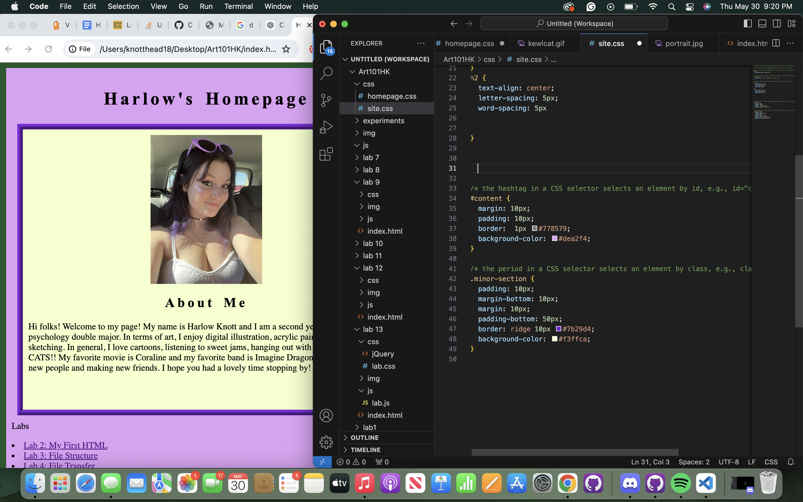
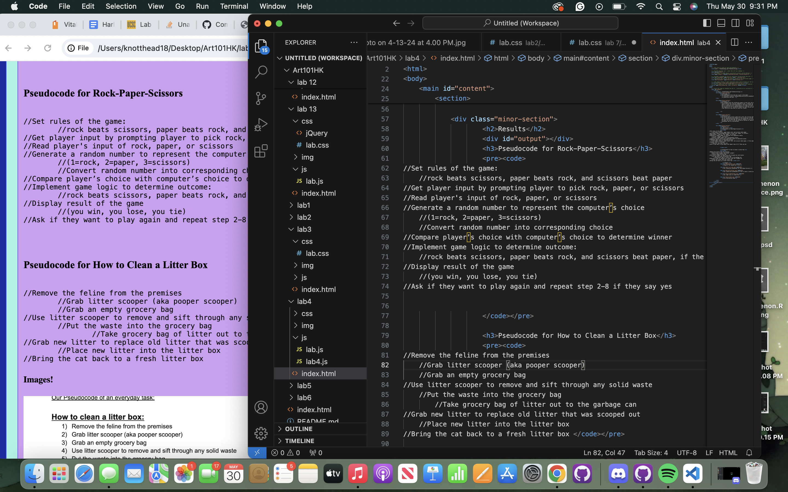
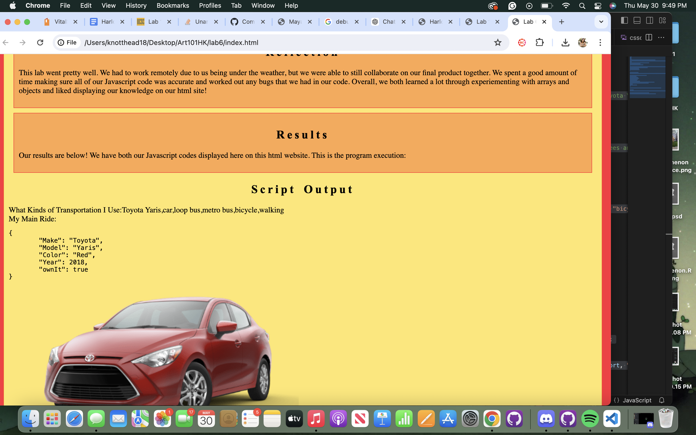
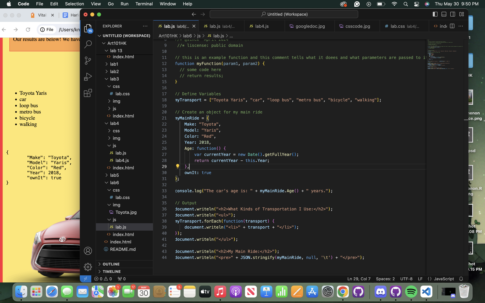
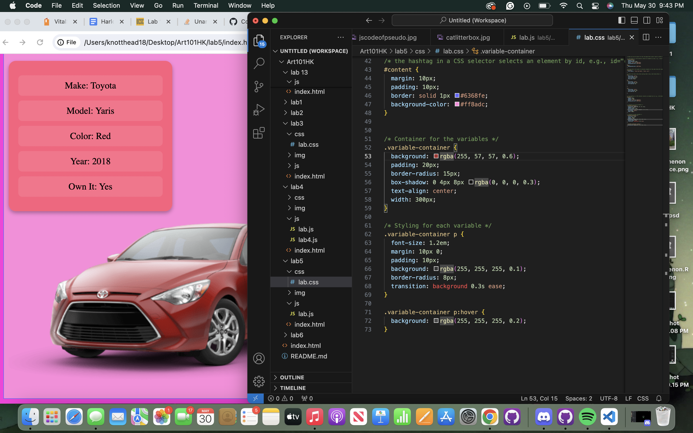
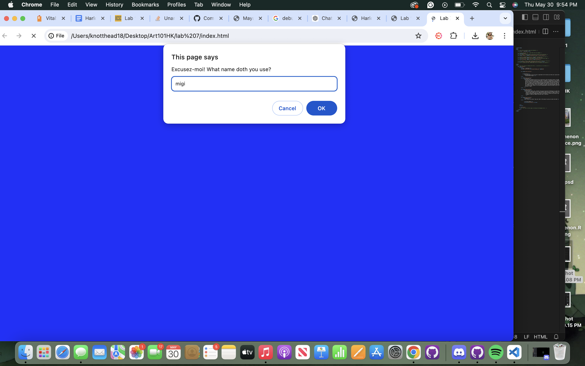
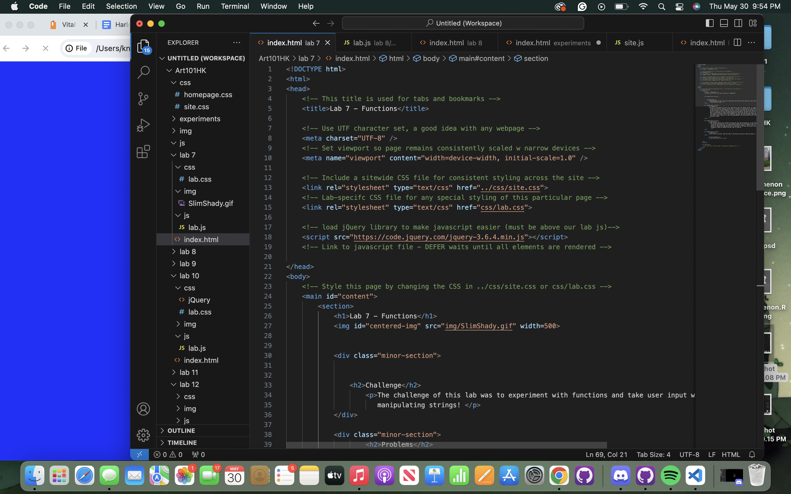
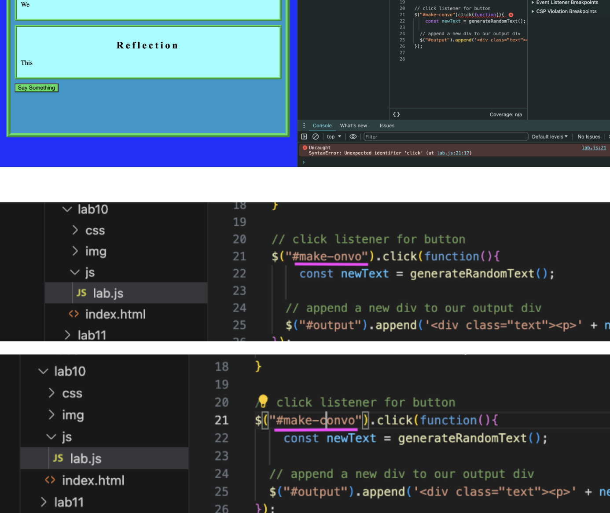

Lab 14 - Debugging Tools and Strategies
Challenge
he challenge of this lab was to go back through our previous labs and use our debugging knowledge to revise them!
Problems
We didn't have too many issues with this lab! One of our main issues was honeslty finding issues to correct within our previous labs! We didn't have any labs that didn't work correctly, so most of our corrections were with formatting to make our code or output clearer and more pleasing to look at. We went through each lab to see what we could fix or improve, and ended up improving a few of our labs!
Reflection
This lab was pretty interesting. It was cool to look back on some of our old labs because some of them were kinda...ugly. It was cool to go back into them and see how we can use our knowledge to improve the overall looks of our labs!
Results
Below we have screenshots of the labs that we fixed, and how we fixed them!
This is Harlow`s original HTML website and she added a snazzy border around her bio and their photo to make it look snazzier!
This is lab 4 (pseudocoding lab) and we went in and edited our commas in our pseudocode from ‘ to ` since it says that this is the correct way to format the code. We also changed the pseudocode titles so that they are the same size as the litter box one used to be smaller.
This is lab 5 and we went in and made our output bigger and more eye-catching so that people can read it next to the car. It used to be just regular text, but we stylized it using CSS and gave it a cool border by using a container.
 This is our before and after of lab 6. We noticed that in our original lab 6 our output for the kinds of transportation we use seemed cramped and there was no spaces between our modes of transport. To fix this, we went into our Javascript and added forEach to iterate over myTransport and output each item in a list ( li element). We also wrapped the transport items in a ul for better structure and readability. We cant actually put the exact edits we made because it codes them into our text LOL!
 This is our lab 7 javascript. We had an error in which our website prompt appeared twice on the webpage instead of just once. We fixed our error by removing one of the javascript links that we had on our HTML. We didn`t realize that we had the script type at the top, and the script on the bottom, which resulted in our prompt occurring twice.
This is our lab 10 javascript, in which we accidentally put make “onvo” instead of make “convo” which made our output come out incorrectly. We fixed our spelling error to correct our output.